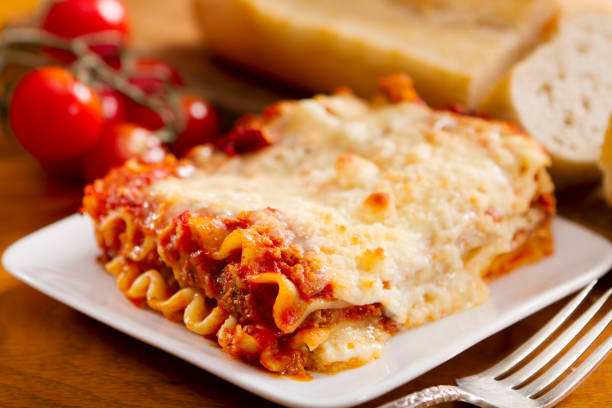

Lasagne

Description
Lasagne is a traditional Italian dish made of layers of flat pasta sheets with meat or vegetables and cheese.
Ingredients
- 1 pound ground beef
- 1 onion, chopped
- 2 cloves garlic, minced
- 1 (28 ounce) can crushed tomatoes
- 2 (6 ounce) cans tomato paste
- 2 (6.5 ounce) cans canned tomato sauce
- 1/2 cup water
- 2 tablespoons white sugar
- 1 1/2 teaspoons dried basil leaves
- 1/2 teaspoon fennel seeds
- 1 teaspoon Italian seasoning
- 1 tablespoon salt
- 1/4 teaspoon ground black pepper
- 4 tablespoons chopped fresh parsley
- 12 lasagna noodles
- 16 ounces ricotta cheese
- 1 egg
- 3/4 teaspoon salt
- 3 cups shredded mozzarella cheese
- 3/4 cup grated Parmesan cheese
Steps
- Preheat the oven to 375°F (190°C).
- Cook the lasagna noodles according to the package instructions.
- In a large skillet, brown the ground beef and drain the excess fat.
- Add the onion and garlic, and cook until the onion is translucent.
- Stir in the crushed tomatoes, tomato paste, tomato sauce, water, and sugar.
- Season with basil, fennel seeds, Italian seasoning, salt, and black pepper.
- Simmer for 15 minutes.
- In a mixing bowl, combine the ricotta cheese and egg.
- Spread a portion of the meat sauce in the bottom of a 9x13 inch baking dish.
- Layer half of the noodles over the sauce.
- Spread half of the ricotta mixture over the noodles.
- Top with half of the mozzarella cheese and Parmesan cheese.
- Repeat the layers once more.
- Bake for 30 minutes or until the cheese is bubbly and golden brown.